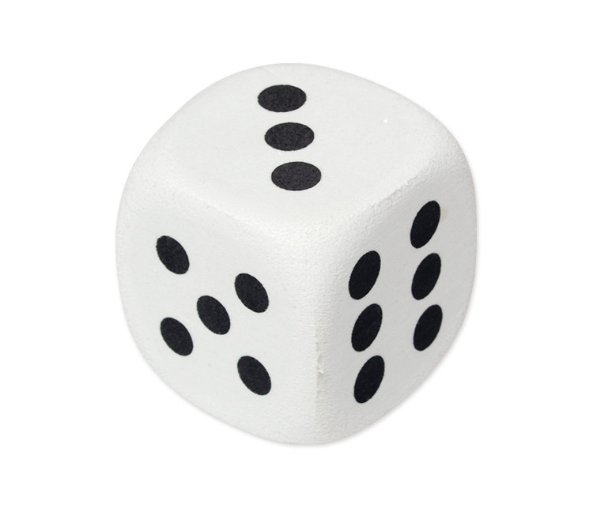

¿Cuánto ganaremos?
Vamos a trabajar en grupos de 3 personas. Cada uno de los grupos tiene un dado y deberá lanzarlo y anotar lo que sale. Las reglas del juego son las siguientes:
Si se obtiene un 2 o un 4 cada uno de los integrantes del grupo gana 5 euros.
Si obtenemos un número impar cada uno perderá 10 euros.
Si obtenemos un 6 cada integrante ganará 38 euros.

Ahora queremos saber cuál será la ganancia esperada o la pérdida esperada al realizar el juego, para cada grupo.
Pista
¿Y si multiplicamos la ganancia por el porcentaje de veces que el grupo ha ganado. ¿Y luego? Podemos restar la pérdida de canicas en cada partida multiplicada por el porcentaje de veces que pierde.
Otra pistilla
Podría hacerse del siguiente modo:
\begin{align*}
E(\text{juego}) &= \text{ganancia por partida} \times(\text{porcentaje de veces que gana}) \\
&- \text{pérdida por partida} \times (\text{porcentaje de las veces que pierde})
\end{align*}
Ya casi lo tienes...
Consideramos la variable aleatoria \( X \) que será la ganancia de cada miembro del grupo en cada ronda. Las probabilidades de que gane cada individuo del grupo en cada ronda, serán las siguientes:
| ¿Qué número sacamos? | 1 | 2 | 3 | 4 | 5 | 6 |
| ¿Pierdo o gano? | Pierdo 10 ( \(X = -10 \)) | Gano 5 ( \(X = 5 \)) | Pierdo 10 ( \(X = -10 \) ) | Gano 5 ( \(X = 5 \)) | Pierdo 10 ( \(X = -10 \)) | Gano 38 ( \(X = 38 \)) |
¿Y si calculas la distribución de probabilidad de \( X \)?
Acude a mi cuando hayas pensado el resto de las pistas
Si llamamos \(x_{i} \) a la ganancia o la pérdida en cada partida, con \(i =1,2,3\), la función de masa de probabilidad será:
- Si \(x_{1} = -10 \), entonces \(p_{1}= P(X = x_{1}) = P(X = -10) = \displaystyle \frac {3} {6}\) (hay tres números(1,3,5) que si me salen pierdo 10 euros.
- Si \(x_{2} = 5 \), entonces \( p_{2} = P(X = x_{2}) = P(X = 5) = \displaystyle\frac {2} {6}\) (hay dos números(2,4) que si me salen gano 5 euros.
- Si \(x_{3} = 38 \), entonces \( p_{3} = P(X = x_{3}) = P(X = 38) = \displaystyle \frac {1} {6}\) (hay un número(6) que si lo saco al lanzar el dado gano 38 euros.
Veamos que se verifican las condiciones impuestas a la función de masa:
- \(p_{1}, p_{2}, p_{3} > 0 \)

- \( p_{1} + p_{2} + p_{3}= \displaystyle \frac {3} {6} + \displaystyle\frac {2} {6} + \displaystyle \frac {1} {6}= 1 \)
la esperanza del juego puede verse como:
\(E(Juego) = \) pérdida (10 euros) (veces que puede perder 10 euros) + ganancia (5 euros) (veces que puede ganar 5 euros) + ganancia (38 euros) (veces que puede ganar 38 euros) =
\( = \sum_{i=1}^{3} x_{i} p_{i} = (-10) \displaystyle \frac {3} {6} + 5 \displaystyle \frac{2} {6} + 38 \displaystyle \frac{1} {6}= \frac {18} {6}= 3 \)
Luego cada individuo del grupo ganaría 3 euros, y el grupo ganaría 12 euros.